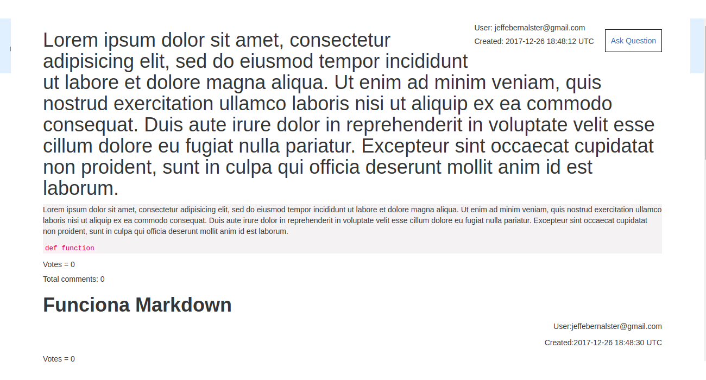
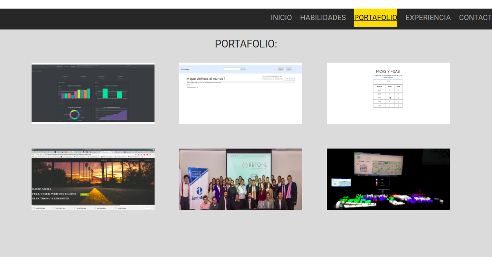
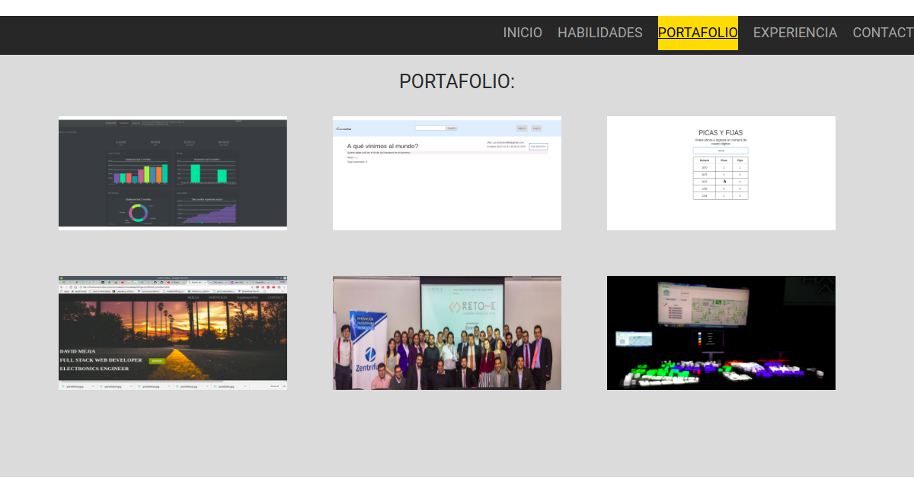

SuperFlow:
https://calm-falls-73396.herokuapp.com/
liEs una aplicacion que funciona como la pagina stack overflow, en esta pagina un usuario puede ver diferentes preguntas relacionadas con problemas de programacion que hallan sido realizadas con anterioridad. Si la persona se registra en la pagina tiene acceso total a la aplicación con lo cual puede hacer preguntas, responder preguntas de otros usuarios, realizar comentarios a las preguntas y respuestas. En esta pagina se busca una interacción entre personas expertas y principiantes que puedan dar solucion a sus problemas de codigo.
Picas y Fijas:

Aplicación para jugar el juego de picas y fijas. En este juego un participante debe adivinar el numero de 4 digitos que la maquina escogio. La dinamica consiste en que el jugador le envia un numero al computador y este le responde cuantos numeros son picas (estan en el numero en un orden equivocado) y cuantos numeros son fijas (aquellos numeros que se encuentran en la posición correcta)
Portafolio:
 

Este proyecto corresponde a una pagina web estatica destinada a mostrar mis habilidades y capacidades como fullstack web developer. La pagina es construida unicamente con HTML5 y CSS3.
Smart city scalled model:
SILICE III – Hacia una ciudad inteligente